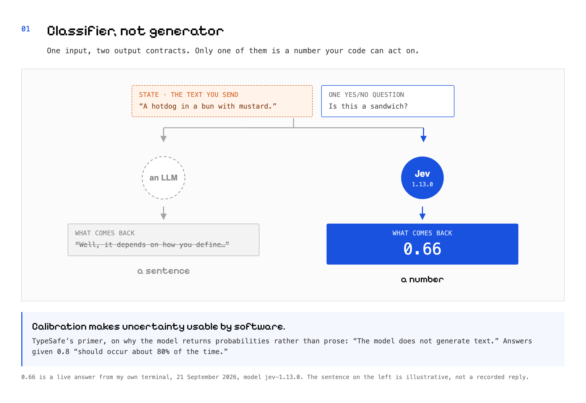
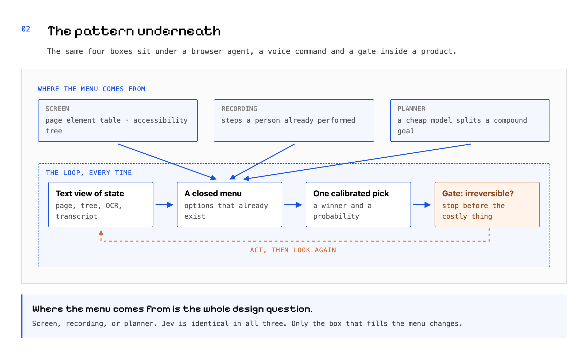
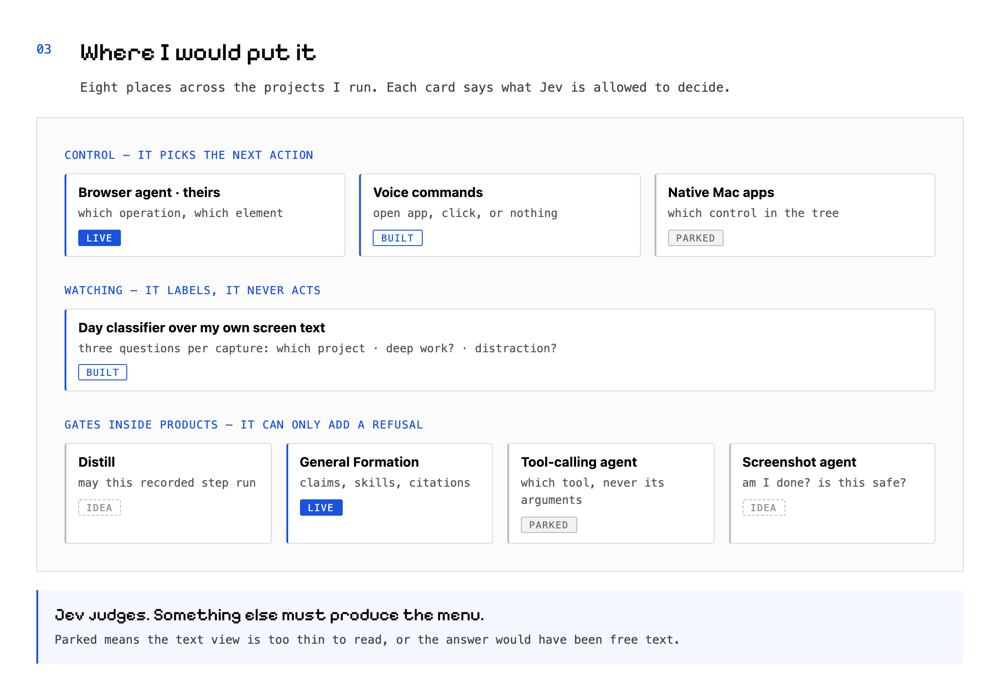
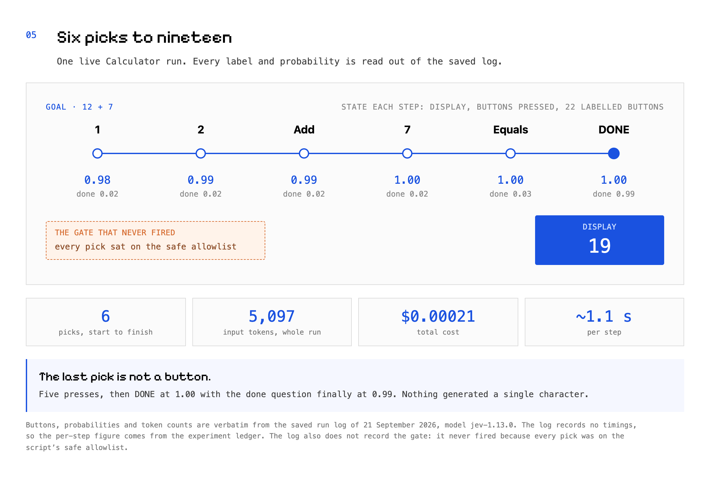

Jev replaces the decision, never the eyes or the pen
A classifier you can put in front of any action, across every project I run
It never writes. It only picks.
Something else produces the options. A cheap model says which one, and how sure it is. Once you see that shape, it turns up in a browser agent, a voice command, a day of your own screen text, and a gate in a product you already shipped.
“A hotdog in a bun with mustard.” I asked a model whether that is a sandwich. It did not argue with me. It returned 0.66.
Then I pointed the same model at the macOS Calculator. It cannot see a screen. It read the window’s buttons as a list of text labels, picked one label at a time, and solved 12 + 7 in six picks. Every pick came back at 98 to 100 percent. The whole run cost $0.00021, about two hundredths of a cent.
The model is Jev, from a company called TypeSafe. It is a classifier, not a writer. Everything below is that same trick wearing different clothes.
What it actually does
TypeSafe trained it against a different output contract than a chatbot has. Their primer is blunt about it: “The model does not generate text.” It returns decisions and probabilities, and the probabilities are meant to be calibrated, so that answers given 0.8 “should occur about 80% of the time.”
You send two things. A state, which is any text at all: a web page, a table of page elements, a Mac window’s accessibility tree, OCR of your own screen, a journal entry. And typed questions. Two kinds matter here. A yes/no question, which TypeSafe calls a Noul, comes back as one probability. A pick comes back as a distribution over options you named, plus a winner. Many questions ride in one request.
Because it never generates, it cannot fill in free text. The menu has to exist before Jev sees it. Pin the version, because thresholds are tuned to one. Input costs $0.042 per million tokens and output is free, since there is no output.
{kind=link}

The pattern underneath
Three of the things I built this week turned out to be the same idea in different clothes. A text view of state. A closed menu. One cheap calibrated pick per step. A gate that stops the irreversible thing.
Where the menu comes from is the whole design question. There are three answers I have actually used.
- Screen. The page’s element table, or a Mac window’s accessibility tree, read out as text. The menu is whatever is on screen right now.
- Recording. The steps a person already performed, captured once, replayed later as the options for a new run.
- Planner. A cheap language model splits a compound goal into sub-goals, and each sub-goal builds its own small menu.
{kind=link}

Where I would put it, across everything I run
Computer and browser control. Browser Use’s jev-ultrafast is the proof that this runs at speed: the page becomes a numbered element table, Jev picks an operation and a target in one request per step, and a small language model writes text only when the operation is a typing one. Their recorded Google Flights run finishes in 7.1 seconds. theirs · live My own voice REPL is the same loop from dictation: one request maps a sentence to open-app, click, or nothing, with a destructive gate in front. It costs about $0.0002 a command and Jev answers in 1.2 to 1.6 seconds. One intent per utterance, so compound sentences still need a planner in front. built The native-app lane, driving Mac apps through the accessibility tree, works where there is no web page to read, which makes it narrow. parked
Watching you, rather than acting. Familiar OCRs my screen every few seconds. The classifier asks three questions of every capture: which project is this, is it deep work, is it a distraction. A day is 163 captures and the dry run prices it at about $0.004. What comes out is a calibrated timeline of my own day, for less than half a cent. built
Gates inside things I already shipped. In Distill, the judgment rules and stop conditions a recording already carries become yes/no gates before an agent acts, and the acceptance criteria become a validation score. idea In General Formation it is already running: a commercial-claims gate, learned-skill selection, verified citations. live In my own computer-use agent it can pick which tool to call but cannot fill a free-text argument, which makes it half a replacement. parked And in the screenshot agent, it can take the “am I done” question and the consequence gate, but never the part that looks. idea
{kind=link}

One gate in Garage I would replace
Garage has a narration filter. It drops the sentences where an agent narrates the harness instead of the company it is working for. Today it is a regex, and on its own fit set it scores precision 1.00 and recall 0.97. That is a home fixture. The set was built from the regex.
The spike asked Jev harness-only questions instead, over the same rows. Precision 1.00, recall 0.78 at the 0.5 bar. Adding a second condition, “is this about the company,” keeping the existing exemption for the run’s own action labels, lifts recall to 0.91. The seven misses left are deliberation openers like “Let me plan the research approach,” which need a literal question of their own. Both of the known leaks the regex cannot safely catch score 0.90 and 0.91.
The same run carries the warning. Never use the company question as a bare veto on its own. It eats legitimate prose from a founder whose product is developer tooling, which is exactly how an earlier round of the regex failed.
So I would ship it in advisory mode first, on the same three-position switch the traction judge already shipped with: reject, advisory, off. The regex stays where it is. Jev can only add a drop, never clear one. Any API failure ships the regex’s answer unchanged.
![Diagram: a before and after of the narration filter. The gray chain on the left runs from a beat through the regex fitted on its own set, and two leak cards slip past it each marked with a gray cross. The blue chain on the right runs from a beat through the same regex, then through a harness-only question, where the same two leaks are caught at 0.90 and 0.91, ending in an advisory tag reading advisory first, regex stays, Jev can only add a drop. A gray side box warns that the company question used as a bare veto eats developer-tooling prose. Four stat tiles below read 1.00 slash 0.97, 1.00 slash 0.78, 0.91 and 7.](img/04-one-gate-i-would-replace.png)
What it cannot do
- No free text out. TypeSafe’s own page says it “is not trained to generate text.” Typing stays rule-based, or goes to a small language model that does nothing else.
- It needs a text view of the thing. Spotify’s desktop app exposes almost nothing to the accessibility tree, two menu items. The web player exposes 668 labelled controls. That decided which one I drive.
- It is weak on adversarial content in the state. Their words: content written to steer the model “can move the answer.” So the text being judged never gets to write the question.
- It is jagged. Their own example puts a refund question at 0.72 and a not-refund question at 0.47 on the same ticket, which is 1.19 between them. Never derive one answer from another.
- It answers semantics, not product policy. On our storage-location set it produced eight false positives at the 0.5 bar, and every one was a policy row. It read each sentence correctly. It cannot know a rule nobody wrote down for it.
A real trace: six picks to nineteen
Goal: 12 + 7. Each step sends the goal, the display, the buttons pressed so far, and the 22 labelled buttons read off Calculator’s accessibility tree. Two questions come back: which button next, and is the goal already reached.
It pressed 1 at 0.98, then 2 at 0.99, then Add at 0.99, then 7 at 1.00, then Equals at 1.00. The done question sat at 0.02 or 0.03 the entire way. Then the display read 19, and the sixth answer was not a button at all: it picked DONE at 1.00, with the done question finally at 0.99.
Five thousand and ninety-seven input tokens for the whole run, which is $0.00021. Every button it picked was on the script’s safe allowlist, so the destructive gate never fired once.
{kind=link}

What I am running next
The Familiar classifier. There is nothing to set up, the data is already on my own disk, and the result is a picture of my own week rather than a benchmark.
If you have a button in your own product that scares you, put one yes/no question in front of it and look at the number that comes back.